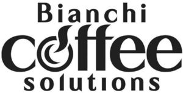

Trade Mark Journal No.2025/009 28 February 2025
WO0000001825714 (7,11)
Office of origin: Italy
Date of International Registration:5 September 2024
Date of designation in the UK:
5 September 2024

The trademark consists of an imprint depicting the wording BIANCHI COFFEE SOLUTIONS in fancy characters arranged on three lines, the word COFFEE being of larger dimensions and the letter O if that word being stylized so as to evoke a steaming cup.
International priority date claimed: 9 May 2024
(Italy)
(302024000075502)
- Class 7
- Coin-operated vending machines; token-operated vending machines; vending machines, electric, for beverages or foods; temperature-controlled food and beverage dispensing units in the nature of vending machines; refrigerated vending machines; beverage preparation machines, electromechanical; coffee grinders, electric; coffee grinders, other than hand-operated; electric coffee grinders for household and commercial purposes; coffee frothers, electric; automatic coffee grinders [machines]; coffee grinders-dispensers for bars; coffee extracting machines; beverage processing and preparation machines and apparatus; agricultural machines; reapers and threshers; fodder presses; tea processing machines; kneading machines; wine presses; blenders, electric, for household purposes; mills [machines]; mixing machines; sorting machines for industry; machine tools; power-operated tools; motors and engines, except for land vehicles; machine coupling and transmission components, except for land vehicles; agricultural implements, other than hand-operated hand tools; incubators for eggs; automatic vending machines.
- Class 11
- Temperature-controlled food and beverage dispensing units, other than vending machines; refrigerated units for dispensing beverages; espresso machines, electric; coffee percolators, electric; electric coffee machines for household purposes; coffee brewers, electric; coffeepots, electric; electric appliances for preparing heated beverages; electric tea and coffee making machines; electric tea and coffee making apparatus; electric tea and coffee machines for commercial and household purposes; automatic installations for making coffee; coffee roasters; coffee tampers for electric coffee machines; beverage heaters, electric; electrical apparatus for heating beverages; heating and cooling apparatus for dispensing hot and cold beverages; beverage cooling apparatus; refrigerated beverage dispensers; refrigerating counters; cool boxes, electric; coffee filters, not of paper, being parts of electric coffee makers; coffee filters, electric; apparatus for dispensing ice; temperature-controlled water dispensing units, other than vending machines; apparatus and installations for lighting, heating, cooling, steam generating, cooking, drying, ventilating, water supply and sanitary purposes.
BIANCHI INDUSTRY S.P.A.
Representative: Dr. Modiano & Associati SpA, Via Meravigli, 16 , I-20123 Milano, ITALY